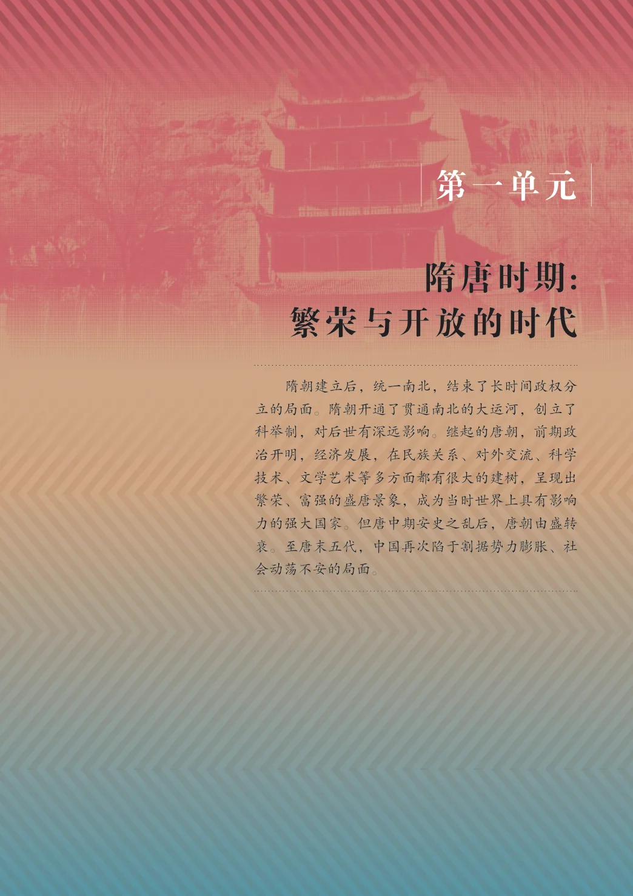

第1单元 · 单元导读
隋唐时期：繁荣与开放的时代
文字版依据教材 PDF 文本层整理；复杂地图、图表及版面关系请以右侧教材原页为准。
教材第 1 页#
第一单元
隋唐时期：繁荣与开放的时代
隋朝建立后，统一南北，结束了长时间政权分立的局面。隋朝开通了贯通南北的大运河，创立了科举制，对后世有深远影响。继起的唐朝，前期政治开明，经济发展，在民族关系、对外交流、科学技术、文学艺术等多方面都有很大的建树，呈现出繁荣、富强的盛唐景象，成为当时世界上具有影响力的强大国家。但唐中期安史之乱后，唐朝由盛转衰。至唐末五代，中国再次陷于割据势力膨胀、社会动荡不安的局面。
